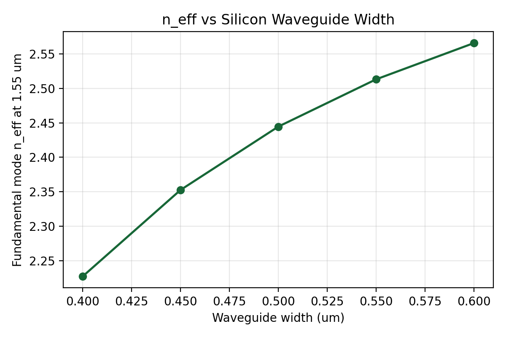
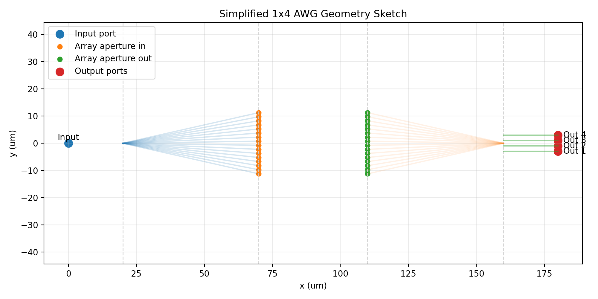
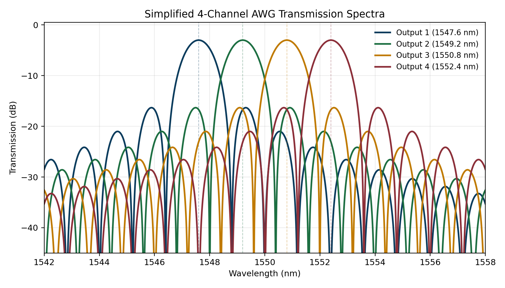
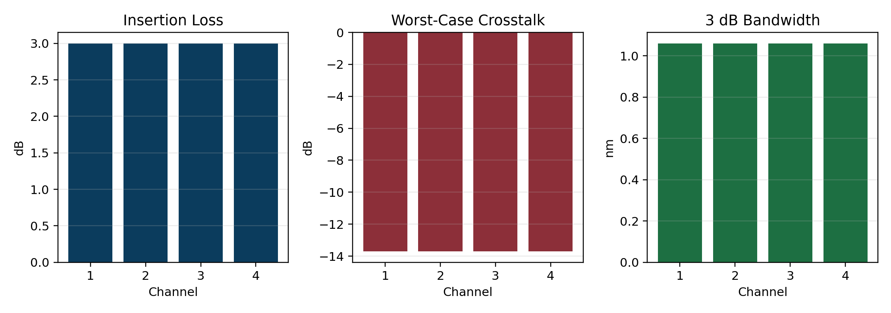

This report consolidates the full three-week project workflow, from silicon strip waveguide MODE analysis to a first-pass 4-channel AWG design and a final low-cost spectral evaluation.
| Item | Value |
|---|---|
| Waveguide width | 0.50 um |
| Waveguide height | 0.22 um |
| Reference wavelength | 1550 nm |
| Fundamental mode n_eff | 2.4446 |
| Fundamental mode n_group | 4.0512 |

| Parameter | Value | Unit |
|---|---|---|
| Channel count | 4 | count |
| Center wavelength | 1550 | nm |
| Channel spacing | 1.6 | nm |
| Target FSR | 19.2 | nm |
| Actual FSR | 19.1358 | nm |
| AWG order | 81 | dimensionless |
| Path length difference | 30.9907 | um |
| Arrayed waveguides | 16 | count |
| Channel | Center Wavelength (nm) | Center Frequency (THz) |
|---|---|---|
| 1 | 1547.6 | 193.7144 |
| 2 | 1549.2 | 193.5144 |
| 3 | 1550.8 | 193.3147 |
| 4 | 1552.4 | 193.1155 |

Because full device-level FDTD validation would consume substantially more Tidy3D credits, the final project stage uses a local array-factor approximation driven by the already extracted MODE parameters and AWG geometry design values.
This means the final spectra below should be interpreted as a system-level first-pass estimate rather than a claim of fully converged electromagnetic device performance.


| Channel | Target (nm) | Peak (nm) | Insertion Loss (dB) | Worst Crosstalk (dB) | 3 dB BW (nm) |
|---|---|---|---|---|---|
| 1 | 1547.6 | 1547.6 | 3 | -13.71 | 1.06 |
| 2 | 1549.2 | 1549.2 | 3 | -13.71 | 1.06 |
| 3 | 1550.8 | 1550.8 | 3 | -13.71 | 1.06 |
| 4 | 1552.4 | 1552.4 | 3 | -13.71 | 1.06 |
The project successfully progressed from low-cost single-waveguide MODE analysis to a reportable 4-channel C-band AWG design flow. The resulting parameter set is internally consistent, produces the intended channel spacing, and supports a coherent final submission package.
The main remaining improvement path is clear: a future iteration should replace the local spectral approximation with one or more device-level Tidy3D simulations to refine insertion loss, passband shape, and crosstalk with higher physical fidelity.